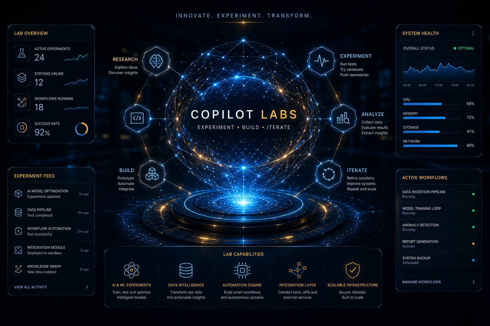

Systems Research
Applied experimentation around intelligent systems, technical coordination, automation models, and scalable workflow structures.
Copilot Labs explores workflow engineering, applied intelligence, automation systems, and experimental frameworks designed to improve technical coordination and research execution.

Applied experimentation around intelligent systems, technical coordination, automation models, and scalable workflow structures.
Rapid technical iteration through AI-assisted systems, workflow engineering, prompt architecture, and structured experimentation.
Experimental payload ingestion and structured transformation systems designed for technical workflows and applied automation.
Structured experimentation around JSON payload validation, schema coordination, and data governance simulation.
Applied experimentation in prompt systems, AI-assisted execution, and technical workflow design.